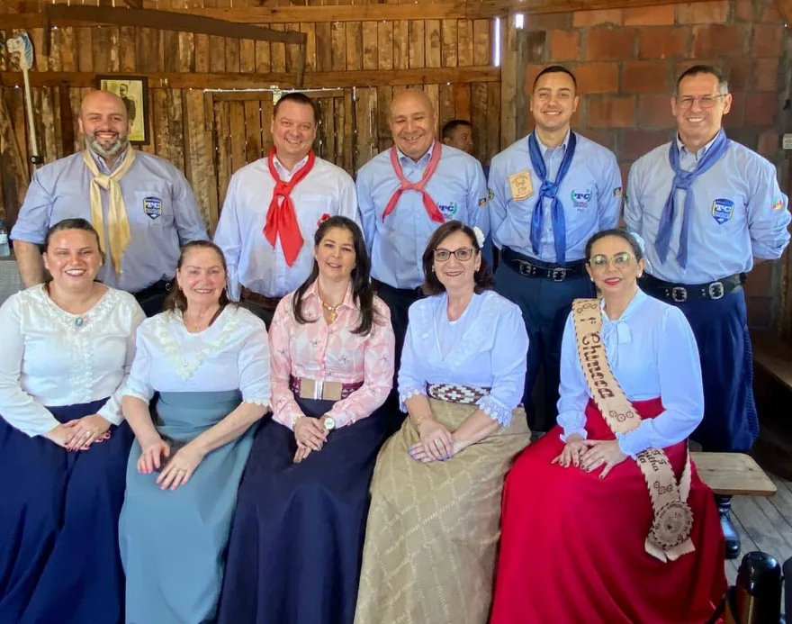

O Tropilha
Nossa história
Fundado em 15 de março de 2015, em Sapucaia do Sul/RS.
Quem somos
Nasceu sem sede, mas com altivez
O Tropilha foi fundado por um grupo de amigos que recusou ver as raízes gaúchas esmorecerem. Nasceu sem sede e sem patrimônio, mas com altivez suficiente para enfrentar qualquer invernada.
Cada associado, gaúcho de nascimento ou de coração, carrega a honestidade, o apreço pela família, a lealdade da palavra empenhada, a coragem do peão e a hospitalidade de quem deixa lugar junto ao fogo de chão.
Nos acampamentos, fandangos e jantares nada é terceirizado: a comida sai da mão das famílias, a decoração é obra de voluntários e a cultura brota dos próprios associados. O galpão é uma escola entre gerações, onde se ensina respeito, se aprende responsabilidade e se celebra a alegria campeira.
Missão e valores
Cultivando a verdadeira tradição gaúcha
Promover, preservar e difundir o patrimônio cultural gaúcho por meio da arte, da educação patrimonial e da ação social, com honestidade, civismo, solidariedade e integração entre gerações.
A atividade principal registrada da entidade é a defesa de direitos sociais. Por isso o Tropilha abraça escolas públicas, asilos, abrigos e qualquer instituição que precise de uma mão amiga.
Estrutura
Núcleos e departamentos permanentes
- Invernadas ArtísticasPré-Mirim, Mirim, Juvenil e Adulta, com cerca de 60 dançarinos em ensaios semanais.
- Invernada de DeclamaçãoPeões e prendas em apresentações públicas e concursos de poesia.
- Musical Tropilha da CançãoGrupo musical de apoio às atividades artísticas, nascido das oficinas de gaita, violão e canto.
- Departamento CulturalOficinas de chimarrão e indumentária e os “10 Minutos de Cultura”. Seus integrantes, prendas e peões, são escolhidos a cada gestão.
- Departamento SocialProjetos com escolas, ACAPASS e Natal Solidário em três asilos do município (mais de 100 idosos).
- Curso de Fandango Gaúcho17 edições entre 2015 e 2026, cerca de 900 formandos, e o Curso de Fandango Avançado (2026).
Marcos
Linha do tempo
- 2015
Fundação em 15 de março, em Sapucaia do Sul, vinculada à 12ª Região Tradicionalista. Primeiras edições do Curso de Fandango e da oficina Tropilha em Versos.
- 2017
Reconhecimento como Entidade de Utilidade Pública Municipal (Lei nº 3.383/2017). Primeiras edições do Natal Solidário.
- 2018
Primeiro apoio institucional, do Fundo Social Sicredi, para o 3º Tropilha em Versos.
- 2023
Certificação como Ponto de Cultura Federal. Início da Coordenação Artística da Semana Farroupilha do município. Campeões do ENART na 12ª RT. Parcerias com o 18º BIMT e o Lions Clube Sapucaia Centro.
- 2024
Campeões Estaduais do ENART (Melhor Acampamento). Apoio às famílias atingidas pelas cheias. Editais da PNAB e recebimento de 670 itens da Prefeitura.
- 2025
10 anos do Tropilha. Prêmio Avançar Tchê, Invernadas Culturais II e Premiação Cultura Viva. 1º lugar no Concurso Cultural da Semana Farroupilha.
- 2026
Bicampeão do Concurso Cultural. CTG na Escola, subsídio de espaços culturais e prêmio a Pontos de Cultura. Terreno cedido para a sede própria.
Governança
Quem conduz a entidade
- Patrão
- Júnior Domingues
- Patronagem
- Executiva, biênio 2024-2026, supervisionada pela Assembleia Geral e pelo Conselho de Vaqueanos
- Vínculo
- 12ª Região Tradicionalista, MTG/RS (registro nº 2736/2015)
- Natureza
- Associação civil sem fins lucrativos, CNPJ 22.757.483/0001-06
- Títulos
- Ponto de Cultura Federal; Utilidade Pública Municipal (Lei nº 3.383/2017); Moção de Congratulações pelos 10 anos, da Câmara de Vereadores
